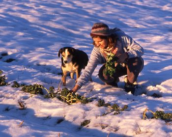
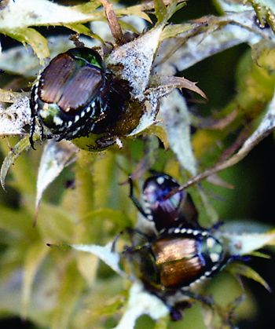
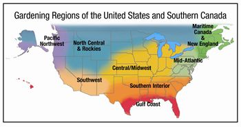

Timely Gardening Tips For Where You Live
Gardening tips by region, including buying peat moss and controlling pesky Japanese beetles.
Edited by Carol Mack
December 2006/January 2007
Maritime Canada and New England
One of my New Year’s chores is to sort my leftover seed stash, throwing out the really old packets and making notes on what to order. If kept cool and dry, tomato seed can last three to 10 years; pepper and brassica seed up to five years; corn, beans and spinach up to four years; and carrots and lettuce three years. Parsley, parsnip, delphinium, larkspur and scorzonera seed rarely are viable for more than a year. You can test viability by rolling a few seeds in a damp paper towel. Cover with plastic to prevent drying out and store at room temperature. Check for sprouts in a week; allow at least two weeks for slow germinators.
Attention hot pepper lovers: If you haven’t tried ‘Czechoslovakia Blacks,’ you are in for a treat. Similar to a jalapeño in heat and shape, they ripen to a lustrous garnet red, have great flavor and bear prolifically. A bowl of them still brightens my table.
Roberta Bailey
Fedco Seeds
Waterville, Maine
Mid-Atlantic
The weeds you battled last summer may tell you how to improve soil conditions for next year. To learn more, read Weeds: Control Without Poison by Charles Walters. Another good read in these days of peak oil, global warming and rising fuel costs, Steve Solomon’s Gardening When It Counts, left me thinking hard about my choice of “inputs” such as fertilizer and water. (Visit Mother Earth Shopping to order Gardening When It Counts.)
Start globe artichokes and ‘Tina James’ evening scented primrose (which has blossoms that burst open right before your eyes at dusk) in January - both need exposure to cold temperatures to flower in the same year. ‘Dean’s Purple’ pole beans, purple asparagus beans and ‘Kevin’s Early Orange’ bell peppers were impressive in our 2006 trials - and will add a nice burst of color to your 2007 harvest.
Ira Wallace
Southern Exposure Seed Exchange
Mineral, Va.
Southern Interior
Here in the South, early December is the perfect time for planting garlic as well as more lettuce and other cool-weather greens. Growing your own tomato plants from seed allows you to choose the best-tasting varieties - start them about eight weeks before the last frost in your area. Use commercial seed-starting mix or combine potting soil with an equal amount of vermiculite, perlite or peat moss. Plant the tomato seeds no more than a quarter-inch deep. Optimum soil temperature for seed starting is 80 degrees - the top of the refrigerator or water heater is often an ideal spot.
Be sure to remove any covers as soon as the seeds germinate, and move to a sunny window or under fluorescent lights. About three weeks after the seeds emerge, begin fertilizing with a very weak solution of fish fertilizer. Let the top of the soil dry out between waterings to prevent fungal diseases.
Becky Wilder
Seeds for the South
Graniteville, S.C.
Gulf Coast
Search the catalogs for a few new tomato, pepper and eggplant seeds to start in January, but don’t be afraid to stick with tried-and-true favorites. I tried a couple of highly touted tomato varieties last year - yuck. I’ll stick with ‘Champion,’ ‘Dona,’ ‘Carmello,’ ‘Sungold’ and ‘Better Boy.’ In the meantime I’m busy harvesting ‘Gypsy’ broccoli, ‘Cheriette’ radishes, ‘Buttercrunch’ lettuce and the rest of the cool-season crops that contribute to a 12-month harvest here.
My basic garden philosophy includes using tons of organic matter to ensure that the soil is productive, and concentrating on crops that give the best quality and flavor. If the pests show up, I reach for the least toxic pesticide available.
William D. Adams
Burton, Texas
Central/Midwest
What’s on my Christmas gardening wish list? High-quality tools and supplies - the well-made kind that I can use my whole gardening life and then pass on to my daughter. These carefully made tools do exist. At work I use great tools from Sneeboer, a third generation Dutch company. I’m buying them (a piece at a time!) for my home as well.
Want a unique gift for the gardener who has everything? How about a bottle of nutrient-rich, cold-processed fish and kelp fertilizer? Yum! Their plants will love them for it!
In deep winter, take time to inventory and organize gardening supplies. They can be ordered with your seed to save the extra shipping charges.
Connie Dam-Byl
William Dam Seeds Ltd.
Dundas, Ontario
North Central and Rockies
The shortest day of the year is one of my favorites. Plants sense the changing day length, and the day after the winter solstice I begin to see a growth spurt in all my indoor tomato and perennial herb plants, including lemon balm, oregano and thyme. Take this hint and begin to plan your spring garden.
Finish sifting and cleaning the seeds you saved last summer. If you offer some of these to Seed Savers Exchange, you will gain access to other members’ seeds - a collective treasure chest of thousands of rare heirlooms not available anywhere else. During early dark evenings, I love to pick up my garden journal and read last summer’s garden events like a wonderful story. This always sparks new ideas, new possibilities and new chapters for the coming spring. In some ways I think I love gardening most during these quiet winter moments.
Bill McDorman
Seeds Trust, High Altitude Gardens
Hailey, Idaho
Pacific Northwest
In the midst of cold, rainy December, we open our mailboxes and find new seed catalogs. For garden enthusiasts, these lift our spirits and cure the winter blues far better than sitting in front of a full-spectrum light.
Holiday shoppers may want to place a few carefully selected seed packets, a pair of great garden gloves and maybe a nifty tool like the Korean “EZ Digger” in a basket for gardeners on your list. Other popular gift ideas include kits for saving seeds or growing mushrooms, or garden markers. With catalog in hand, start planning for the 2007 garden season. The average item on the American dinner plate has traveled 1,500 miles, so it’s satisfying to know that much of yours can come from your own garden!
Rose Marie Nichols McGee
Nichols Garden Nursery
Albany, Ore.
Josh Kirschenbaum
Territorial Seed Co.
Cottage Grove, Ore.
Southwest
In the Southwest, the dark days of December are brightened by ristras: dried red chilies strung together and hung from doorways. While many chili varieties can be used to make a traditional ristra, we recommend ‘Española Improved,’ an early-season classic, or ‘Numex Big Jim,’ an extra-long chili we are offering in 2007. Both these varieties were developed through the chili breeding program at New Mexico State University, where the nonprofit Chile Pepper Institute celebrates all things capsicum.
Winter days also are brightened by the harvest of cold-hardy greens from cold frames: the French lettuce varieties ‘Brune D’Hiver’ (‘Brown Winter’) and ‘Rouge D’Hiver’ (‘Red Winter’) develop beautiful rust and red colors as the cold deepens, and make a colorful winter salad mixed with bright green mâche leaves. We love this season, and give thanks at each meal for the stored, preserved or dried bounty of our gardens.
Emily Gatch
Seeds of Change
Santa Fe, N.M.
We would like to thank Almanac editor Carol Mack and the regional Almanac contributors for lending their expertise to the magazine. - Mother
Digging Deeper
with Barbara Pleasant
The Price of Peat Moss
Recently I started a garden, and many books I’ve read recommend using peat moss to improve the soil. I’ve heard that peat moss may be a nonrenewable resource, plus it’s expensive. The less I spend, the more I save by growing my own vegetables. What do you recommend?
Jim Maroon
Lawton, Oklahoma
Avoid using large amounts as a soil amendment, but do use small amounts for seed-starting mixes. Here’s why:
Over 10 million cubic yards of peat moss are harvested each year from bogs in Canada, plus another million or so from bogs in the northern United States. Those are big numbers, but because less than 1 percent of North American peat lands are currently being mined, peat bogs remain more plentiful here than in the British Isles, where harvesting has reduced peat acreage by nearly 80 percent. However, peat comes from such slow-growing, slow rotting plants that it typically takes 1,000 years for a bog to add 1 yard to its depth. Once harvested, peat bogs are changed forever.
Of equal concern are the environmental costs of the fuels used to harvest, process and then ship it long distances, which in your case is about 1,500 miles. That’s a lot of greenhouse gas emissions produced to provide organic matter for outdoor beds. Compost, shredded leaves and grass clippings would do as well and are less expensive.
Peat moss does have special characteristics that make it a better choice when used in small amounts as part of seed starting mixtures. It absorbs and holds 10 to 20 times its dry weight in water, and it is a very poor medium for various soilborne fungi, including those that cause seedling damping off. Beneficial bacteria can live in peat moss, so using small amounts of peat moss to start seeds indoors is a sound decision. Once seedlings grow big enough to transplant outdoors, compost makes a better soil amendment than peat because it contains a wealth of biological life-forms and a huge range of major and minor plant nutrients.
Battling Japanese Beetles
Has there been any improvement in the technology for removing Japanese beetles? We have rosebushes and a large grapevine, and by August we are inundated with Japanese beetles. When my father had them, it was our daily duty to pick them off and put them in a can of kerosene.
Dave Harvey
Swanzey, New Hampshire
Your father had the right idea by collecting Japanese beetles every day, because it stops signals given off by feeding beetles that attract more beetles: Handpicking can reduce overall feeding by half. Soapy water will work as well as kerosene. First thing in the morning, hold it under the leaf or bough where the beetles are feeding, and brush them down into it with your hand. The beetles won’t bite you, and as long as temperatures are cool they will fall into the water rather than fly away.
Other organic control measures include applying beneficial nematodes or milky spore disease to lawns to kill white grubs (Japanese beetle larvae), and growing plenty of flowers that provide nectar for Typhia miniwasps, which attack the beetles.
Research shows that commercial traps often attract more Japanese beetles than they catch, so they should not be placed near cultivated plants.
 JUDYWHITE/GARDENPHOTOS.COM Winter is the gardener’s quiet season, a time to plan for next year and dream of perfectly grown flavors and food. |
 DAVID CAVAGNARO Fall-planted, cold-hardy crops such as Brussels sprouts, kale (above) and spinach, protected by layers of mulch and snow, can be harvested into the winter months and often survive to get a jump-start on the spring growing season. |
 BARBARA PLEASANT Japanese beetles can feed on over 300 plant species. |
|
 MOTHER EARTH NEWS STAFF Gardening Regions |
|
|